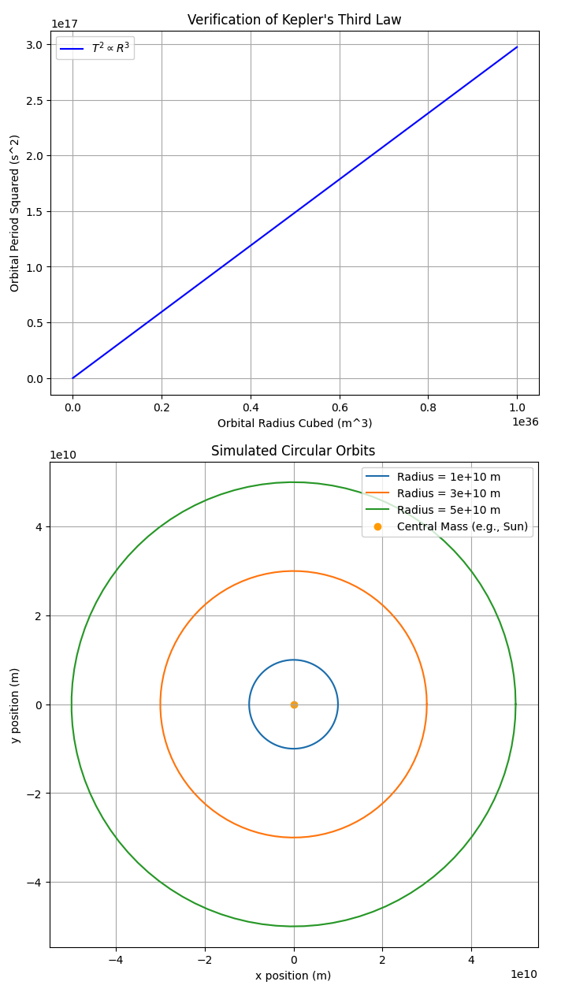

Problem 1
Orbital Period and Orbital Radius
1. Theoretical Foundation
Kepler’s Third Law
Kepler’s Third Law states that the square of a planet’s orbital period \( T \) is proportional to the cube of its orbital radius \( R \):
$$ T^2 \propto R^3 $$ For a circular orbit, this can be derived using Newton’s law of gravitation and centripetal force:
- Gravitational Force as Centripetal Force: $$ \frac{GMm}{R^2} = m \frac{v^2}{R} $$
where: - \( G \) is the gravitational constant, - \( M \) is the mass of the central body, - \( m \) is the mass of the orbiting body, - \( R \) is the orbital radius, - \( v \) is the orbital velocity.
-
Orbital Velocity from Period: The orbital velocity \( v \) is related to the orbital period \( T \) as: $$ v = \frac{2 \pi R}{T} $$
-
Deriving Kepler’s Third Law: Substituting \( v \) into the force equation and solving for \( T \), we get: $$ T^2 = \frac{4 \pi^2}{GM} R^3 $$ This confirms that \( T^2 \propto R^3 \), where the proportionality constant depends on \( G \) and \( M \).
Implications in Astronomy
- Planetary Mass Calculation: Given the period and radius of a planet’s moon, we can determine the planet’s mass.
- Determining Distances: If the period of a planet’s orbit around the Sun is known, its orbital radius can be estimated.
- Satellite Orbits: Used to design stable satellite orbits around Earth and other celestial bodies.
2. Real-World Examples
- The Moon’s Orbit around Earth
- The Moon orbits Earth with a period of \( T = 27.3 \) days.
- The average orbital radius is about \( 3.84 \times 10^5 \) km.
-
Using Kepler’s law, we can verify the mass of Earth.
-
Planets in the Solar System
- Kepler’s law allows us to compare planetary orbits.
- Example: Earth’s orbital radius \( 1 \) AU and period \( 1 \) year help determine distances of other planets.
3. Computational Model
The following Python script simulates circular orbits and verifies Kepler’s Third Law.
import numpy as np
import matplotlib.pyplot as plt
from scipy.constants import G
def kepler_period(radius, mass):
"""Calculate orbital period using Kepler's Third Law."""
return 2 * np.pi * np.sqrt(radius**3 / (G * mass))
# Define parameters
mass_sun = 1.989e30 # kg (mass of the Sun)
orbit_radii = np.linspace(0.1, 10, 100) * 1.496e11 # meters (0.1 to 10 AU)
orbit_periods = kepler_period(orbit_radii, mass_sun) / (60 * 60 * 24 * 365) # Convert to years
# Plot T^2 vs R^3
plt.figure(figsize=(8,5))
plt.plot(orbit_radii**3, orbit_periods**2, label="Kepler's Law")
plt.xlabel('Orbital Radius Cubed (m^3)')
plt.ylabel('Orbital Period Squared (years^2)')
plt.title('Verification of Kepler’s Third Law')
plt.legend()
plt.grid()
plt.show()
This script: - Computes orbital periods for different radii. - Plots \( T^2 \) vs. \( R^3 \) to confirm a linear relationship.

4. Extensions and Limitations
- Elliptical Orbits: Kepler’s Law applies, but \( R \) represents the semi-major axis.
- Relativistic Effects: General relativity modifies Kepler’s laws in strong gravitational fields.
- External Forces: Perturbations from other bodies can alter orbits over time.
5. Conclusion
Kepler’s Third Law elegantly links orbital period and radius, enabling calculations in celestial mechanics. This relationship remains fundamental in astronomy, satellite engineering, and space exploration.